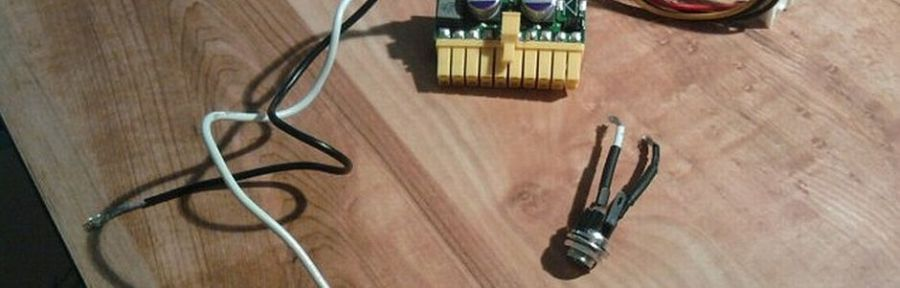

Current projects
Projects I am currently working on.
PeerKit
A new type of CDN using peer-to-peer data. Helping website owners save on bandwidth costs and deal with usage spikes.
PeerJS
Javascript library for true peer-to-peer data in the browser, built on top of WebRTC technology.
BinaryJS
A Node.js module and client side Javascript library for stream communication over binary WebSocket.

Archive
Things I've built in the past.
2011
Ascam Wow video codecs and modern compression suck. Let's convert all videos to ASCII and then let people video chat through a text stream. We'll call it ascam.
CodeHN In case you're at work and want browing HN to look more like harmless asynchornous Javascript code, I got yo back.
Heated Built on NowJS, Heated is a realtime collaborative heatmap. Every user on Heated views the same webpage at the same time and as they interact with the webpage, a heatmap is drawn in realtime to gauge levels of user engagement on specific elements of the page.
Jazzroom Built with NowJS, Jazzroom is a collaborative music jam hack. Open up the link with a friend or two and be amazed as you each take control of one of three instruments and play music together in realtime.
Orshard Keep track of publicy accessible fruit trees on Google Maps! Orshard is a fun hack on top of Google FusionTables. All data is stored in Google FusionTables and no database exists. Drag, drop, and play around!
2010
Mixest This is the indie Pandora that you've never heard of. Get in on it now before it's cool. Built with a couple friends in the summer of 2010.
Sparkvote In a world dominated by costly clicker systems, the Sparkvote project aims to allows accessible classroom polling. Sparkvote enables single-step live polls accessible by browser, smartphone, or text.
Hakeru The word "flow" in Japanese is Hakeru. Built with a couple friends as an experiement using realtime frameworks on Node.js, Hakeru became an awesome task-oriented chat and project management tool.
Floverse Built for the Yahoo HackU in 2010, Floverse was a visual multitouch new reader. Flotype soon grew to have nothing to do with the original idea but the HTML5 multitouch app was pretty cool!
DerpShirts Wouldn't you want a Cuil t-shirt? Or maybe some WebVan swag? DerpShirts specialized in selling gear sporting logos from failed companies.
Classberry The modern classroom environment is filled with connected devices. Classberry aims to harness this resource to provide a canvas (an HTML5 canvas to be exact) for presenters to draw on their slides while also integrating chat, polling, file sharing, and questions. All of these implemented to be compatible with modern browsers and HTML5 enabled smartphones. This project is the winner in the Social Good category of the 2010 Zynga Hackathon.
2009
Encompassed Organize all your online profiles into a virtual business card. Parses popular networks to auto-populate your card. This project is the 3rd place winner for the 2009 Yahoo HackU competition.
Box Computer I stuffed a Core 2 Duo CPU overclocked to 3ghz on a Mini-ITX mobo into a 7" x 7" USPS Priority Mail box. Hilarity ensued. This was my primary computer for about 7 months.
15" Photo Frame Go big or go home. I gutted a 15" Laptop, stripping unnecessary components, carefully seperating all the parts and attached it to a custom cutout on a big photo frame. In the end I had a fully working, WiFi supporting, completely self-contained 15" photo frame!
2007
Facebook Desktop Created at the infancy of the Facebook API in 2007, this app relies on the Facebook REST API to create pop up notifications for the common Facebook notifications. Since the Facebook API has gone through a ridiculous number of iterations this app is largely antiquated.
2006
Simple Flash MP3 Player Paste your mp3's url and instantly get code to embed a low-overhead flash mp3 player on any page.
2005
Simple Form Script POST your HTML form to this script and magically watch the form contents show up in your inbox. Eliminates excessive configuration options that plague most scripts.
